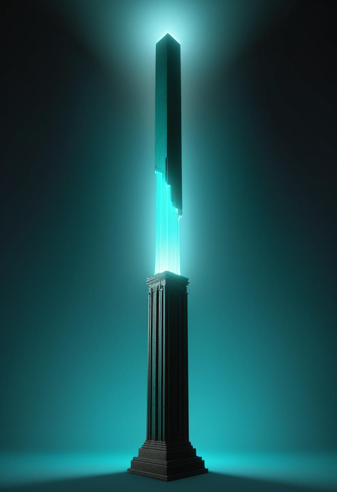
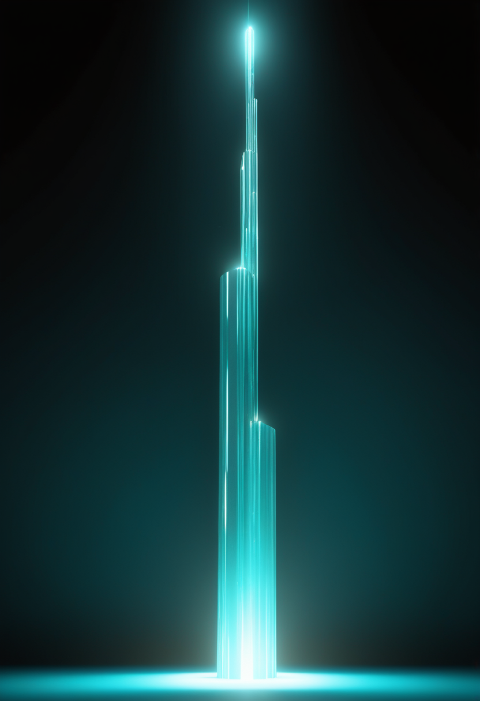
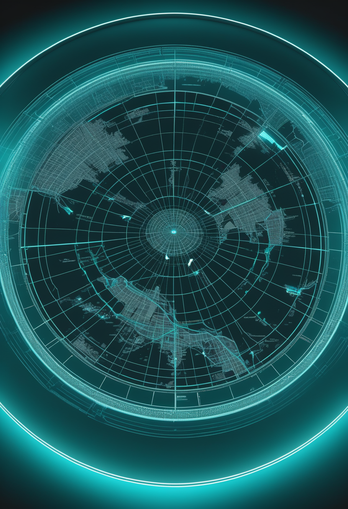
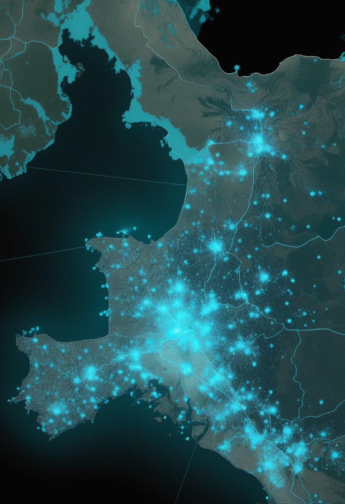
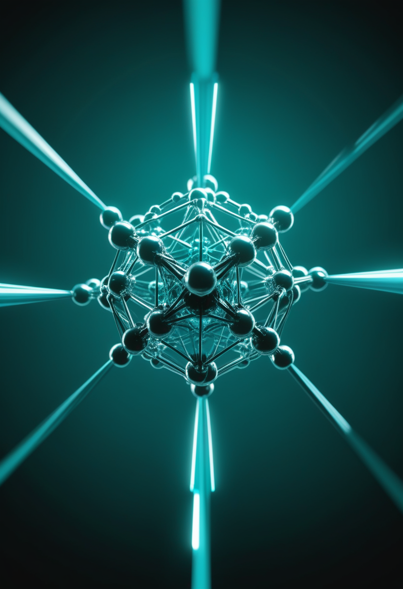
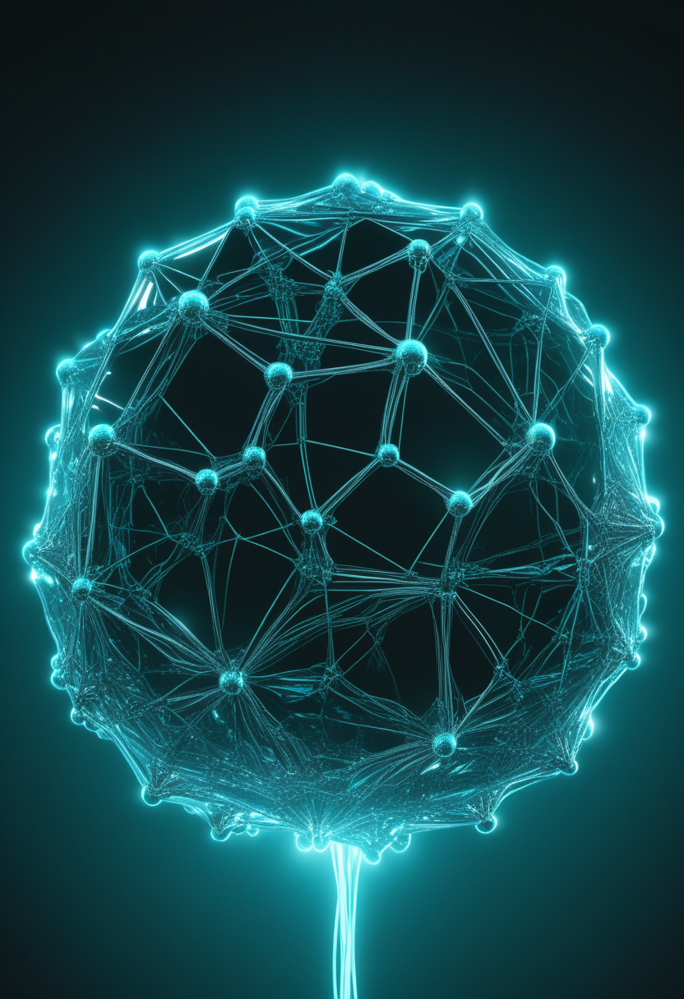
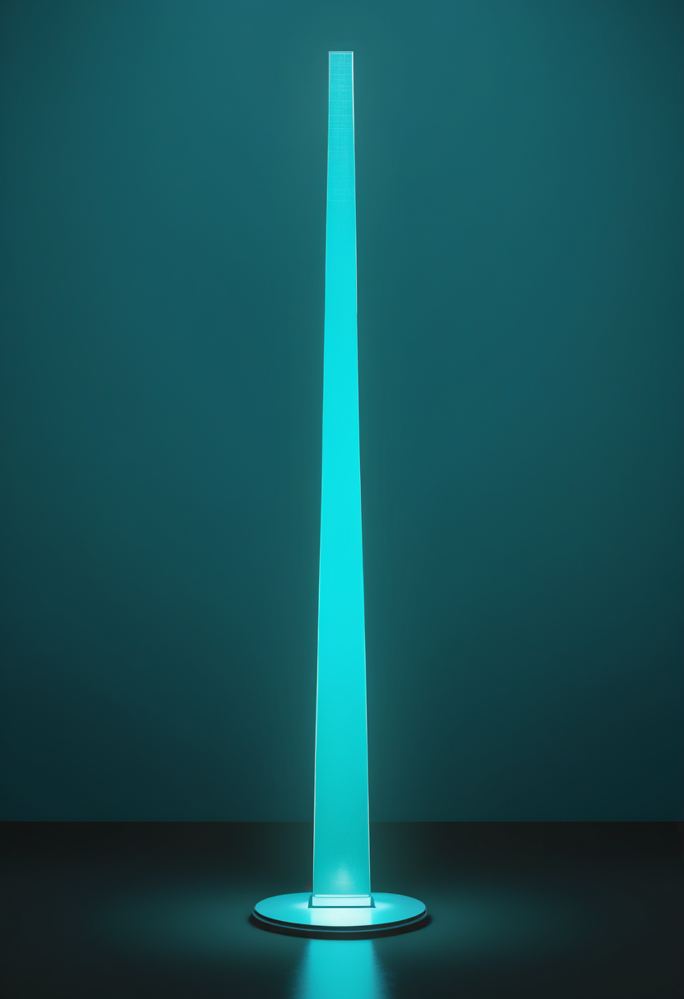
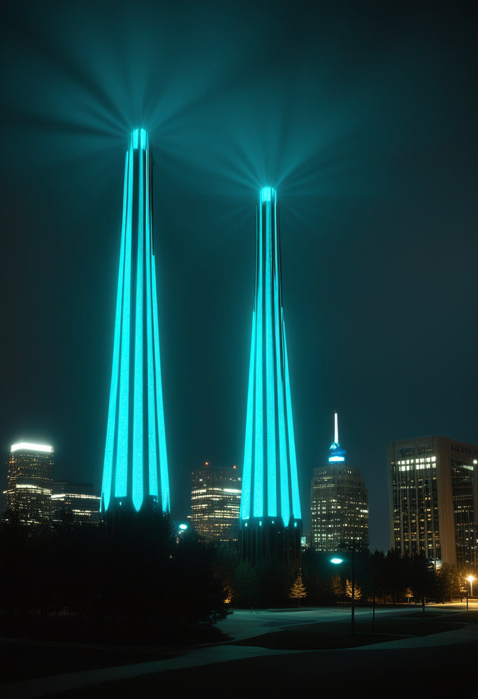

木曜日の便り。今日は素材が豊富で、5つの領域をまとめた。目玉は、NovartisとBiogenの第3四半期決算(10/27・10/28)。ゾルゲンスマ群は髄腔内投与の新製剤Itvisma発売で前年同期比+34%、スピンラザは高用量レジメンへの切替で+23%となり、承認・制度の話題だった薬が実際の普及数字として現れた形。基盤の章では、アフリカCDCが本日開いたエボラ緊急閣僚会合でカセヤ所長が国境検査と『平和回廊』を提案したこと、ケニアへの約150万ドルの支援拠出、フランス国内のチクングニア熱感染が183例に増えたことを届ける。自由の章では、中国NeuroXessがシリーズBで約7億元を調達したことと、ALS患者を対象に視線入力とBCI併用を比べる新しい試験が登録されたことを。畏敬の章では、小惑星ベンヌの試料が太陽系の『内』と『外』が混ざった起源を示したこと、中国FASTがパルサーを含む原始三重星系を特定したこと、NVisionの分子量子ビットがNatureに掲載されたことを。美の章では、記号AIによる『腫瘍デジタルツイン』が治療結果を74%で予測したこと、AIにどこまで意識を感じるかを調べた心理学研究、トロント大学とLSEにAI意識の研究拠点が立ち上がったことを取り上げる。
Novartisの第3四半期決算(10/27)によると、ゾルゲンスマ群の売上は4億400万ドル(前年同期3億100万ドル、+34%)。2歳以上にも使える髄腔内投与の遺伝子治療Itvismaの発売が牽引した。翌10/28のBiogen決算ではスピンラザが約4億6,100万ドル(+23%)で、高用量レジメンへの切替が寄与した。承認や臨床データの話題が続いていたSMA治療薬が、ようやく『実際に使われ、売上として表れた』数字に移った形。一方で南アフリカの事例が示すように、薬が伸びる地域と届かない地域の差は依然残っている。

Novartisの第3四半期決算(10/27発表)で、ゾルゲンスマ群の売上は4億400万ドル(前年同期3億100万ドル、+34%)。髄腔内投与のItvismaは米国・日本・EU・湾岸の数か国で承認されており、その発売が伸びを牽引した。発売以来の治療患者数は世界で6,000人を超え、1〜9月累計の売上は10億7,100万ドル(+16%)。

Biogenの第3四半期決算(10/28)で、スピンラザの売上は約4億6,100万ドル(前年比+23%)。高用量レジメンへの切替が主な要因で、切替時の追加投与による一時的な上乗せも含まれる。研究開発費は31%増え、その一部は年1回投与の次世代薬サラネルセンの試験費用が押し上げた。全社売上は28億ドル(+11%)。
南アフリカ・クワズール・ナタール州で3人の子どもがSMAを抱える母親が、通院のための交通手段を含め、家族にはもっと支援が必要だと訴えた。高額な治療薬の売上が伸びる一方で、治療や日々のケアに手が届かない地域がある現実を映している。
製剤の売上は2桁成長を続けるが、それが届く場所と届かない場所の差は変わらない。数字が伸びるほど、その裏にあるアクセスの格差も問われる。
中国のBCI企業NeuroXess(脳虎科技)がシリーズBで約7億元を調達したと10/28に報じられた。資金は臨床試験と製造に充てる。同社によれば臨床実施は65例で、7月には約20病院が参加する登録試験を始めた。中国では3月にNeuracleの侵襲型BCIが世界で初めて商用承認を受けており、後続企業への投資も増えている。
Tobii DynavoxやSmartboxの視線入力装置を使っているALSの成人30人が、自分の装置とBCI入力を加えたCognixion ONEを比べて使う試験が登録された。ALSが進むと眼球運動の制御も衰え、視線入力の精度が落ちることが試験の背景にある。登録日と開始時期は要確認。
視線入力は今もALS患者の意思伝達の柱。BCIはそれを置き換えるものではなく、視線が使いにくくなった後の『次の手段』として評価され始めている。

アフリカCDCは10/28、保健・財務・運輸相を集めた臨時のオンライン閣僚会合を開いた。所長のカセヤ氏は、流行地域の出入国地点での検査と専門的な診断、紛争地に医療者が入るための『平和回廊』を提案した。ただし本稿執筆時点で合意内容は報じられていない。会合の結果は、AU議長のンダイシミエ・ブルンジ大統領が主導する首脳会議にも反映される予定。DRCの確定例は1万例を超えたと報じられている(前号の政府発表は約10,060例)。
アフリカCDCはカセヤ所長とケニアのドゥアレ保健長官の会談後、ケニアのエボラ対応に約150万ドルを拠出したと10/28に報じられた。ケニアの累計症例数は報道により7例・8例・9例と食い違っており、要確認。前号では『累計9例・死亡2人で新規なし』と伝えた。

ECDCの集計(10/14時点)では、2026年に蚊を介した国内感染が出たのはフランス(163例)とイタリア(1例)のみ。フランス公衆衛生局の10/19時点の集計では、本土の集団発生は22件・計183例に増えた。最大の集団発生はロット県プレサック(35例)とジロンド県プリニャック=エ=マルカン(30例)。ECDCは11月まで週報を続ける。
エボラ対応は『数を数える』段階から、資金と国境管理で各国が足並みをそろえられるかの段階へ。会合の合意内容は次号で追う。
NASAのOSIRIS-RExが持ち帰った小惑星ベンヌの試料をETHチューリッヒが分析した。その物質は太陽系内側・外側のどちらとも一致せず、両者が混ざった場所で形成されたと報告した。混合には木星が関わったとみられる。ベンヌの元の物質が太陽系の歴史の後半に集まったとする従来の見方にも疑問を投げかけている。
中国科学院国家天文台の韓金林氏らは、電波望遠鏡FASTでパルサーPSR J0435+3233が白色矮星・太陽に似た恒星と一緒に生まれた三重星系の一員であることを示した(Astrophysical Journal Letters、10/9)。パルサーは約8日周期で相手を公転し、外側の恒星は73.5年周期で回る。外側の星の重力が、パルサーの自転周期の異常な変化を説明するとみられる。

米NVisionは10/28、個別に制御でき、光インターフェースを持つ有機分子の量子ビットについての論文がNatureに掲載されたと発表した。同社は『量産可能な初の分子量子ビット』としている。ただしこれは企業のプレスリリースによる主張で、論文本体の数値は未確認。
宇宙から持ち帰った試料と地上の巨大望遠鏡がともに『天体の生まれ方』を書き換えている。量子分野では、超伝導・シリコンに続いて分子という新しい方式が台頭してきた。

UCLとケンブリッジ大の研究チームが、患者ごとの腫瘍を計算機上に再現する記号AIのプラットフォームを開発した。評価したトリプルネガティブ乳がんの症例のうち74%で治療結果を予測できたという。論文はCell Reports Medicineに掲載された。ブラックボックス型ではなく、推論の道筋を説明できる点が特徴。

ミュンヘン大学(LMU)の研究(学術誌Cognition)では、参加者はどれほど応答的なAIでも、最も応答の乏しい人間より意識が低いと評価した。振る舞いが人間と同じでも、人はAIに意識を認めにくいことを示す結果。前号で紹介したSeth・Block・TononiのNature論考(AIは意識を持たない可能性が高い)と同じ方向の知見となる。

トロント大学がAIと意識をつなぐ基礎研究のプロジェクトを始め、ロンドン・スクール・オブ・エコノミクス(LSE)は530万ドルの寄付を受けて新しい研究グループを立ち上げる。AIの意識をめぐる議論が、個別の論考から恒常的な研究体制へと移りつつある。
『AIに意識はあるか』の議論は、否定する論考・検証を試みる心理学研究・恒常的な研究拠点という三つの異なる層で同時に進んでいる。一方で、心を写すのでなく病を写す『デジタルツイン』は医療応用で着実に結果を出し始めている。
木曜日の便り。今日の一本は、NovartisとBiogenの第3四半期決算で、ゾルゲンスマ群が+34%、スピンラザが+23%とSMA治療の2大製品が揃って2桁成長を示したこと。命の章ではこれに加え、南アフリカで3人のSMA児を育てる母親が支援を訴えたことを届けた。基盤の章では、アフリカCDCが本日開いたエボラ緊急閣僚会合でカセヤ所長が国境検査と『平和回廊』を提案したこと、ケニアへの約150万ドルの支援拠出、フランス国内のチクングニア熱感染が183例に増えたことを伝えた。自由の章では、中国NeuroXessがシリーズBで約7億元を調達したことと、ALS患者の視線入力とBCI併用を比べる試験が登録されたことを取り上げた。畏敬の章では、小惑星ベンヌの試料が太陽系の内と外が混ざった起源を示したこと、中国FASTがパルサーを含む原始三重星系を特定したこと、NVisionの分子量子ビットがNatureに掲載されたことを届けた。美の章では、記号AIの『腫瘍デジタルツイン』が治療結果を74%で予測したこと、AIへの意識の感じ方を調べた心理学研究、トロント大とLSEにAI意識の研究拠点が立ち上がったことを伝えた。
では、また明日の朝に。 — JaH